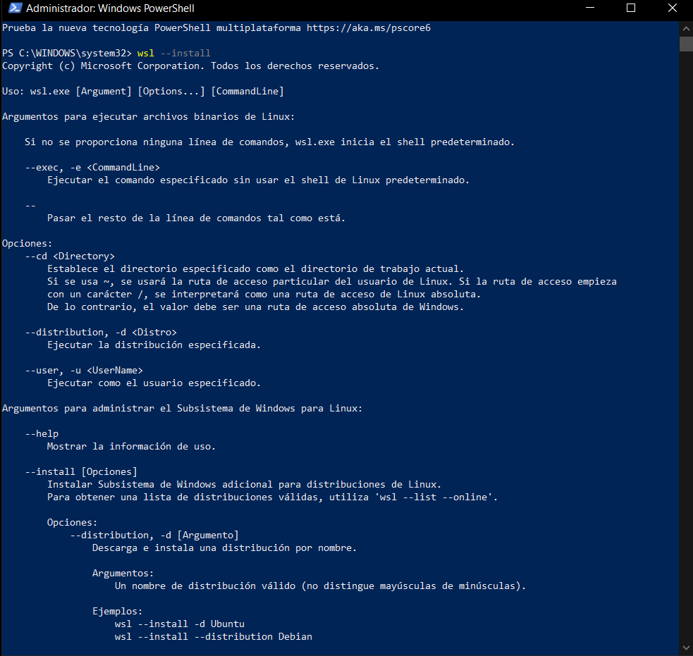
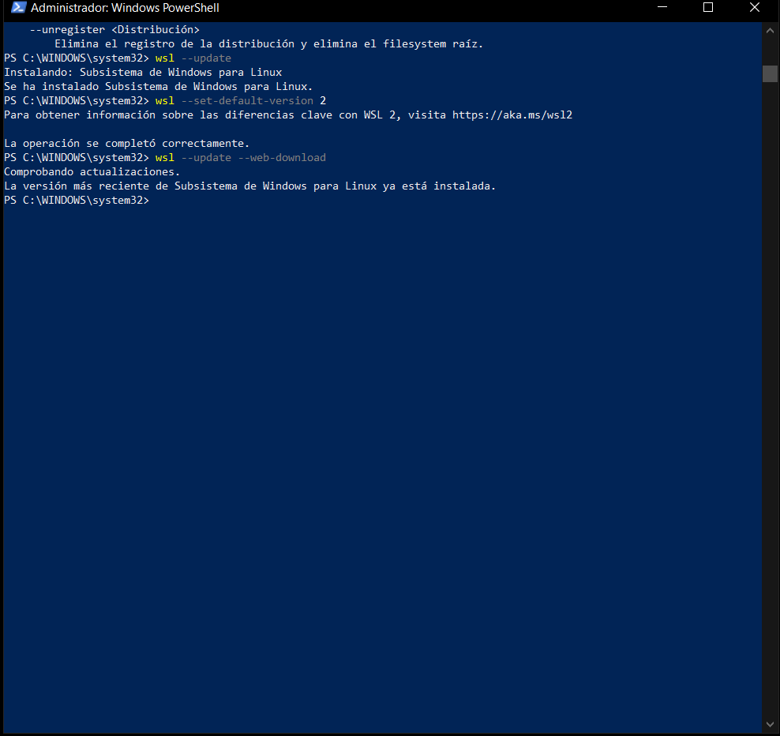
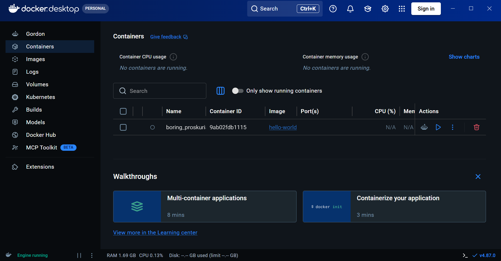
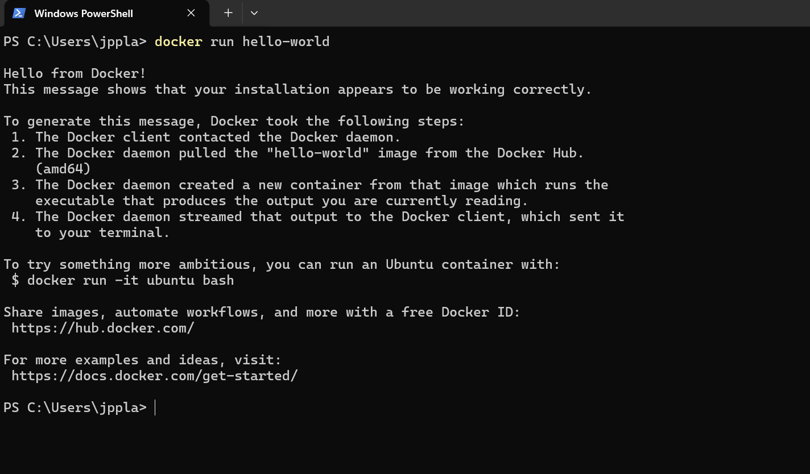
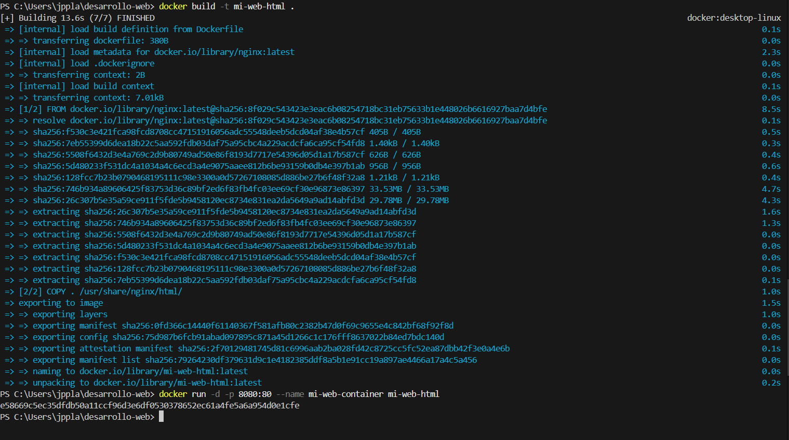
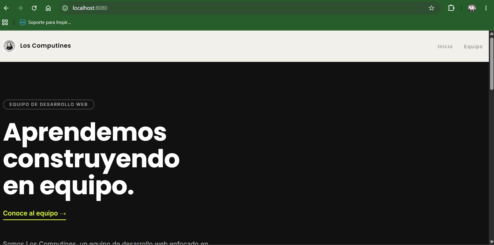

Guía paso a paso sobre los requisitos, la configuración del contenedor y la publicación de nuestro sitio web local.
Para que Docker funcione correctamente en Windows, es fundamental habilitar el Subsistema de Windows para Linux (WSL 2). A continuación, las evidencias de la preparación del entorno mediante terminal:

Evidencia: Comando wsl --install para habilitar el subsistema.

Evidencia: Configuración de WSL versión 2 por defecto.
Docker Desktop es una aplicación que facilita la creación, prueba y despliegue de aplicaciones empaquetadas en contenedores de forma rápida y sencilla en entornos locales.
https://www.docker.com/get-started/Docker Desktop Installer.exe. En el asistente de instalación, aceptar los términos y dejar la opción por defecto de usar WSL 2 (si aparece).
Captura 1: Docker Desktop funcionando.

Captura 2: Comando hello-world.
Nginx es un servidor web ligero. Dentro de Docker, sirve los archivos estáticos (HTML, CSS) de nuestro sitio a los usuarios.
FROM nginx: Define la imagen base de Nginx.COPY . /usr/share/nginx/html/: Transfiere los archivos al directorio público del contenedor.EXPOSE 80: Expone el puerto del contenedor.docker build -t mi-web-html .docker run -d -p 8080:80 --name mi-web-container mi-web-html
Captura 3: Contenedor activo.

Captura 4: Sitio en localhost:8080.
 Los Computines
Los Computines